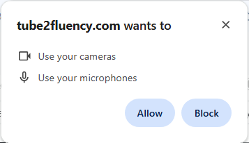

Tube2Fluency
Представьте, что вы оказались в своем любимом фильме или сериале в роли одного из персонажей. Именно так работает наш метод изучения английского – это как караоке, но вместо песен вы разыгрываете сцены из любимых шоу.

Зарегистрируйтесь бесплатно. Вам понадобится только ваш email, который будет использован для восстановления пароля в случае его утери. Выберите язык, на котором вы говорите, для переводов и упражнений.
В этом документе вы увидите действия, выполненные на нескольких языках. Пожалуйста, не пугайтесь, если вы не понимаете слова на экране; разные языки используются исключительно в иллюстративных целях.
Этот плейлист содержит короткие и простые видео, которые идеально подходят для начинающих работать с аппликацией.

Используйте большие красные кнопки над видео для управления воспроизведением, а не стандартные элементы управления YouTube.

Реплики вашего персонажа должны быть отмечены галочкой в таблице субтитров,
и эти реплики будут воспроизводиться с приглушенным звуком.

Оставшиеся реплики, не отмеченные галочкой, будут озвучены плеером.
Чтобы начать упражнение, нажмите эту кнопку
 (Не путайте с кнопкой воспроизведения оригинального видео
)
(Не путайте с кнопкой воспроизведения оригинального видео
)
Вы можете учиться на компьютере, планшете или даже на телефоне, но имейте в виду, что не все функции работают на мобильных устройствах.
Во время упражнения апплиация работает в одном из двух режимов:
т.е. когда воспроизводятся немаркированные субтитры.
Это реплики, которые были отмечены галочкой
В этом режиме ученик должен произнести правильный текст в течение отведенного времени. Поэтому у нас есть два параметра: скорость и уровень звука.
Уменьшение скорости позволяет ученику иметь достаточно времени для произнесения своей реплики. Звук в этом режиме может быть частично или полностью отключен. Если звук частично отключен, ученик имеет возможность слушать его и использовать его как подсказку.

Вы можете просмотреть свою коллекцию карточек
Вы можете учить сохраненные слова
Чтобы сгенерировать упражнение, нажмите эту кнопку

Нажимайте эту кнопку несколько раз, упражнения могут отличаться друг от друга.
Вы можете разделить видео на более короткие клипы, чтобы лучше сосредоточиться на небольших частях текста. Это особенно полезно, когда вы работаете с длинными видео, в которых много говорящих и длинных реплик. Разделяя видео на более короткие клипы, вы можете сосредоточиться на одном говорящем за раз и практиковаться с ним.
Не забывайте, что вы можете регулировать скорость воспроизведения и зацикливать видео для достижения лучших результатов. Подробнее о параметрах воспроизведения: Настройте скорость и подсказки для вашего удобства
До сих пор мы работали с видео, когда на экране были английские субтитры. Можно усложнить задачу, заменив английские субтитры субтитрами на вашем родном языке.
Это потребует от вас быстрого формулирования английских предложений на основе текста, который вы уже знаете. Вы также можете записать себя, а затем воспроизвести запись, чтобы проверить, насколько хорошо вы справились.
Инструкции по записи упражнения вы найдете по этой ссылке Запись и просмотр ваших упражнений
Помните, что вы не обязаны записывать упражнение целиком, можно ограничиться его частью. Инструкции по работе с частью видео вы найдете по этой ссылке Разделите видео на более короткие клипы, чтобы улучшить концентрацию на меньших фрагментах текста.
Обратите внимание, что тренировочные субтитры создаются автоматически и могут содержать семантические и контекстуальные ошибки. Они предоставляются исключительно в качестве справочного инструмента для практики речи.
Включите камеру с помощью переключателя в правом верхнем углу экрана.
В первый раз вам нужно будет подтвердить разрешение на использование камеры и микрофона. 
Убедитесь, что все субтитры упражнения активны, т.е. синие прямоугольники слева от субтитров
активны.

Вы также можете нажать кнопку "восстановить", чтобы восстановить начальные параметры задания.
Вы увидите изображение с вашей камеры в верхнем левом углу видео.
Кнопка "Записать упражнение" станет доступной, и вы можете нажать на нее, чтобы начать
запись.

Когда закончите, нажмите кнопку упражнения, чтобы просмотреть результат.
(И снова, не путайте ее с кнопкой воспроизведения оригинального видео
)
Вы можете удалить запись, используя кнопку "Очистить".

Вы также можете сохранить запись в файл на вашем компьютере. Для этого нажмите кнопку
"Сохранить".
 Файл записи будет сохранен в папке "Загрузки" (Downloads).
Файл записи будет сохранен в папке "Загрузки" (Downloads).
Позже вы можете открыть ранее сохраненный файл и снова просмотреть запись. Вы также можете поделиться этим файлом с друзьями и учителем. Файл будет доступен для просмотра в нашем приложении.
Наконец, вы можете опубликовать свое видео на YouTube.

Мы заботимся о вашей конфиденциальности, поэтому видео не будет доступно публично. Вы сами решите, кому отправить ссылку.
Загрузка видео на YouTube занимает некоторое время. Вы получите электронное письмо на адрес, указанный при регистрации, со ссылкой на ваше видео на YouTube.
From: SitcomEnglishLab
Dear Maxim,
Your homework was published successfully and will be
available for viewing soon:
https://www.youtube.com/watch?v=2pNlyIHvzes
Просто нажмите на ссылку в письме, а затем перешлите ее тем, кому хотите.: https://www.youtube.com/watch?v=2pNlyIHvzes
Когда вы впервые открываете выбранное видео, вы увидите упражнение в формате, который мы подготовили. Это включает:
Таким образом, вы можете изменить длину клипа.
Вот как вы выбираете персонаж.
Вот как будет выглядеть и звучать упражнение, если вы играете за Пятачка.
А здесь вы должны будете говорить то, что говорит Винни.
Вы можете создать свое собственное упражнение из любого видео на YouTube. Короткие видео с субтитрами наиболее удобны.
Найдите подходящее видео и скопируйте его адрес.
К сожалению, субтитры, обычно доступные на YouTube, не подходят для наших упражнений. Если вы серьезно настроены, вы можете скачать субтитры и отредактировать их. Существует множество доступных онлайн-инструментов для редактирования субтитров. Я использую Subtitle Edit. Это бесплатная программа. Вы можете найти ее здесь Subtitle Edit Она также позволяет работать с видео, используя их онлайн-адреса, включая видео с YouTube.
После завершения редактирования субтитров вы можете загрузить их в приложение и создать свое упражнение. В этом примере мы создали короткое упражнение, используя только часть выбранного видео. Вы можете делать то же самое.
Сохраните его в файл. Позже вы сможете открыть файл упражнения для практики.
Если видео не имеет субтитров или если авторы запретили загрузку субтитров, а вы все же хотите работать с этим видео, вам придется создать субтитры самостоятельно. Вы можете сделать это с помощью той же программы Subtitle Edit.
Вы уже узнали, как создать упражнение из любого видео на YouTube. Однако было бы гораздо удобнее, если бы ваши упражнения были доступны прямо из приложения, без использования файлов. Кроме того, если вы преподаватель, вы могли бы создавать упражнения для своих студентов и назначать их напрямую из вашего плейлиста. Следующее видео покажет, как это сделать. Мы будем использовать то же видео, с которым уже работали, и подготовленные подходящие субтитры. Обратите внимание, что в конце мы загружаем файл субтитров на сервер, чтобы пользователям этого видео-упражнения не пришлось создавать или загружать свои собственные субтитры, подходящие для урока.
В предыдущем разделе вы видели, как загрузить субтитры к видео на сервер. Имейте в виду, что вы можете сделать это для любого видео, даже если оно находится в другом плейлисте, если вы решите, что предложенные субтитры не подходят. Давайте повторим, как это сделать: